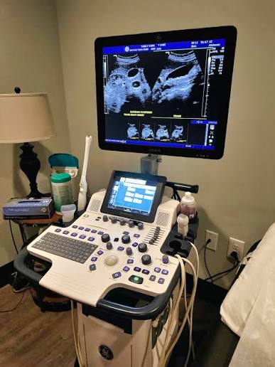
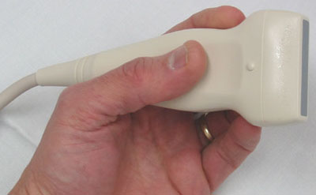

When we look at an ultrasound image, it can seem like the machine is simply taking a picture of the inside of the body. But that is not actually what happens.
Ultrasound creates an image by sending high-frequency sound waves into the body and listening for the echoes that come back.
The machine then uses information from these echoes to build the image we see on the screen.

How does it work?
The basic idea is quite simple.
The handheld part of the ultrasound machine is called a transducer, or probe. It sends sound waves into the body and receives the echoes that return.
The system then processes these returning signals and uses them to create an image.
Transducer → Body tissues → Echoes → Computer → Image
That is the basic idea behind ultrasound image formation.
1. The probe sends sound waves
The process begins when the ultrasound machine sends an electrical signal to the transducer.
Inside the transducer are special materials called piezoelectric elements. These elements can change electrical energy into mechanical vibrations.
These vibrations produce high-frequency sound waves that travel into the body.
These sound waves are above the range that humans can normally hear, which is why they are called ultrasound.

2. The sound waves travel through the body
Once the sound waves enter the body, they travel through different tissues.
As the waves move through the body, they can encounter boundaries between tissues with different acoustic properties.
At these boundaries, some of the sound energy can be reflected back toward the transducer.
These returning waves are called echoes.
3. Why do echoes come back?
Different tissues do not interact with ultrasound in exactly the same way.
When an ultrasound wave reaches a boundary between tissues with different acoustic properties, part of the sound can be reflected.
The amount of sound that returns depends on the properties of the tissues and the boundary between them.
4. The probe receives the echoes
After sending a sound pulse, the transducer can receive the returning echoes.
The same piezoelectric elements that helped produce the sound waves can also respond to returning mechanical vibrations.
These vibrations are converted into electrical signals that the ultrasound system can process.
5. Time helps determine depth
One of the most important pieces of information is how long it takes for an echo to return.
An echo returning sooner generally comes from a structure closer to the transducer, while an echo returning later generally comes from a deeper structure.
The ultrasound system uses the travel time of the sound pulse and its returning echo to estimate the depth of the reflecting structure.
This helps the machine determine where the information should appear in the image.
6. Echo strength creates different shades
The machine also looks at the strength of the returning echo.
Stronger echoes are displayed as brighter areas, while weaker echoes are displayed as darker areas.
This produces the familiar black, white, and gray appearance of a standard ultrasound image.
For example, simple fluid-filled areas often produce very few internal echoes and therefore appear relatively dark.
Highly reflective structures, such as bone surfaces, can appear very bright and may produce a darker acoustic shadow behind them.
7. The computer turns the information into an image
By this stage, the ultrasound system has information about the returning echoes.
It knows things such as:
- when an echo returned
- how strong the echo was
- where the sound pulse was sent
The system processes this information and assigns brightness values to different locations.
These values are displayed on the monitor as pixels, producing the ultrasound image.
8. Why can ultrasound show movement?
Ultrasound does not create just one image and stop.
The system repeatedly sends sound pulses, receives echoes, processes the information, and updates the display.
This happens very quickly, allowing ultrasound to provide real-time imaging.
Because of this, we can observe moving structures while the examination is taking place.
What does the gel actually do?
The gel placed on the skin has an important job.
Air between the transducer and the skin can greatly reduce the transmission of ultrasound into the body.
The gel helps remove this air gap and provides better acoustic coupling between the transducer and the skin.
Why do different tissues look different?
Different tissues have different physical and acoustic properties.
These properties affect how ultrasound travels through the tissue and how much sound is reflected or scattered back toward the transducer.
Because the returning echoes are different, the machine displays different parts of the image with different brightness levels.
This is why an ultrasound image is not simply a photograph of the anatomy.
It is an image created from information carried by returning ultrasound echoes.
Ultrasound does not “see” like a camera
This is an important idea to remember.
A camera creates an image from visible light. Ultrasound works differently.
It sends sound waves into the body, receives the returning echoes, measures their characteristics, and uses that information to construct the image.
So, in simple terms, an ultrasound image is a visual representation of information obtained from ultrasound echoes.
What about Doppler?
Ultrasound can also provide information about movement using Doppler techniques.
Doppler ultrasound uses changes in the frequency of returning ultrasound caused by moving blood cells to provide information about blood flow.
This can help assess things such as the direction and velocity of blood flow.
So, while standard B-mode ultrasound mainly provides a grayscale anatomical image, Doppler can add information about motion and blood flow.
Ultrasound image formation in one simple flow
The main idea
Ultrasound image formation may sound complicated at first, but the basic process can be remembered quite easily.
Once this basic process is clear, other ultrasound concepts such as echogenicity, acoustic shadowing, posterior enhancement, B-mode imaging, and Doppler become much easier to understand.
Sources
- U.S. Food and Drug Administration (FDA) — Ultrasound Imaging
- RadiologyInfo.org — Ultrasound (Sonography)
- StatPearls, NCBI Bookshelf — Ultrasound Physics and Instrumentation
- NCBI Bookshelf — Medical Imaging Systems – Ultrasound
- Clinical Ultrasound Physics — PMC
- Intensive Care Ultrasound: Physics, Equipment, and Image Quality — PMC
Quick takeaway: Ultrasound does not take a photograph of the inside of the body. It sends sound waves, receives the echoes returning from tissues, and uses that information to create the image we see on the screen.